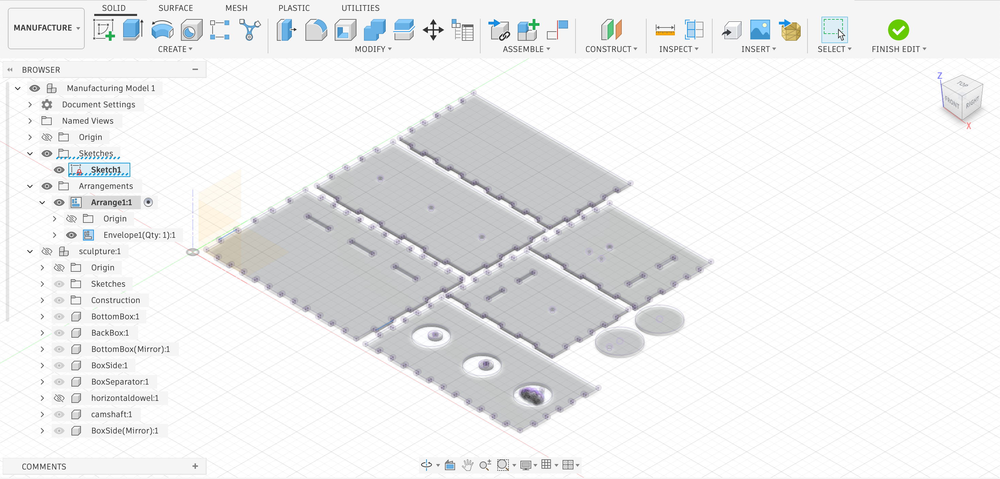
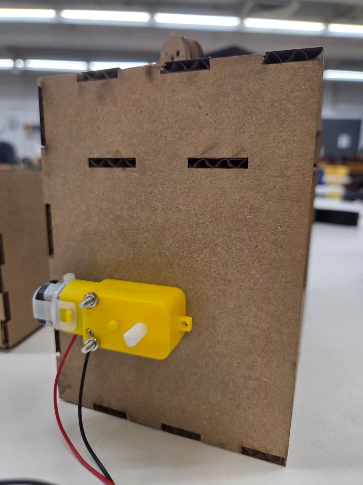
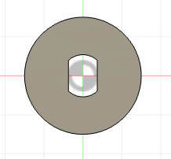
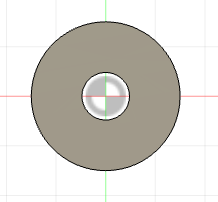
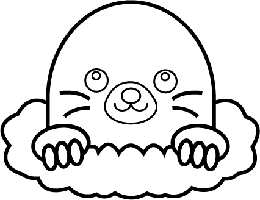

For this assignment, I was inspired by the game Whack-a-Mole, so I decided to make a sculpture where moles come out of holes, just like in the game. I chose to use a cam-follower mechanism, which converts rotational motion into linear motion (up and down). I glued the cams at different angles so the moles go up and down at different moments.
Back view with mechanism
Front View
I built the box out of cardboard using the finger joint technique we learned last week, but this week I used the extrude functions to model it in 3D inside Fusion. I kept the parametric techniques we learned in class to set the thickness, width, height, and length, as well as the thickness of the dowel. I made the box, the cam, and the follower. I also learned how to make joints and animations in Fusion.
I also learned how to use the manufacturing options in Fusion to arrange and project the pieces so they could be exported as a DXF for the laser cutter.

I designed the box with holes so the motor could be attached with a couple of M3 screws. I also made a shaft holder and a dowel holder so the dowel could connect to the shaft and rotate.



I designed the mole in Illustrator and imported it into Fusion, where I scaled it. It worked well, but I learned that if you want to engrave designs, you shouldn't let the lines connect. Because of this, some of the mole's eyes, mouth, and fingers were cut out instead of just engraved. This is something I can improve on for the project.

Download Fusion File